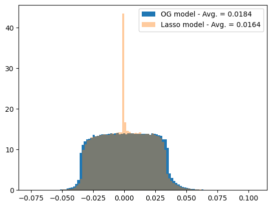
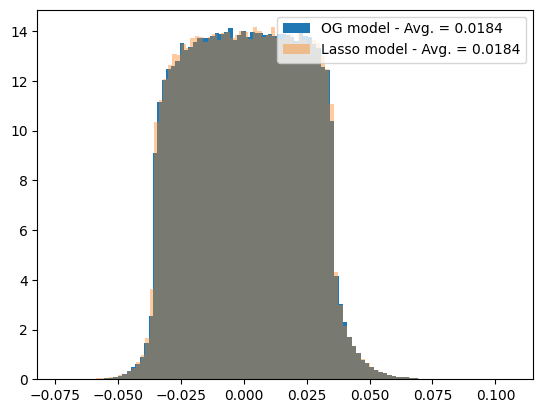

As we saw when learning about polynomial regression, overfitting is a common problem in deep learning, and occurs when a model is excessively complex, and manages to fit exactly each of the training’s set datapoints, rather than learning some general knowledge that would allow it to generalize to new, unseen data.
We identified two main factors for the overfitting of a model:
The number of parameters is too large.
The number of training examples is too small.
As we build neural networks (NN), this two factors become even more important. Adding too many layers to a NN would certaintly lead to overfitting, while having access to a too small dataset would make training also fail.
In this notebook, we will explore few common regularization techniques that allow to deal with overfitting. In particular, regularization techniques allow for:
Improved generalization: By preventing overfitting, regularization can help to improve the generalization performance of the model on new, unseen data.
Simplified models: Regularization can help to reduce the complexity of the model, which can make it easier to interpret and understand.
Increased robustness: Regularized models are often more robust to noise and other types of perturbations, as they are less sensitive to specific patterns in the training data.
Improved efficiency: Regularization can help to reduce the number of parameters in the model, which can make the model more efficient to train and deploy.
Better interpretability: Regularization can help to identify the most important features in the data, which can improve the interpretability of the model.
Improved optimization: Regularization can help to stabilize the optimization process, which can lead to faster convergence and better performance.
Reduced risk of overfitting: Regularization helps to reduce the risk of overfitting, which can be a major issue when training deep learning models.
Better generalization to new data distributions: Regularization can help to improve the generalization of the model to new data distributions, as it encourages the model to learn more generalizable patterns in the data.
Improved performance on small datasets: Regularization can be particularly useful when working with small datasets, as it can help to reduce the risk of overfitting and improve the generalization performance of the model.
Improved performance on noisy datasets: Regularization can help to improve the performance of the model on noisy datasets, as it encourages the model to learn more robust and generalizable patterns in the data.
2 Regularization techniques
We will now review different regularization techniques. For that, we will train different models. We will consider for that the same problem as in the previous notebook: the multiclass classification of MNIST. We first get the data from torchvision.
Let’s define our loss function, again the cross-entropy loss.
criterion = torch.nn.CrossEntropyLoss() # criterion is typically used in ML coding jargon interchangeably with loss function.# It will be clear later why we didn't call this loss_func
and the accuracy
def accuracy(predictions, targets):"""Compute the accuracy of predictions given the true targets."""return (predictions.argmax(dim=1) == targets).float().mean()
We will also need a model. We will use the same one as the previous notebook.
import torch.nn as nnimport torch.nn.functional as Fclass FullyConnected(nn.Module):def__init__(self, input_size, hidden_size, output_size):super().__init__()self.linear_1 = nn.Linear(input_size, hidden_size)self.linear_2 = nn.Linear(hidden_size, output_size, bias=False)def forward(self, x): x = x.reshape(-1, 28*28) z =self.linear_1(x) x = F.relu(z) z =self.linear_2(x)return z
Let us now create the training loop. Because we will need it few times, we just create a training loop wrapper:
We already say this method, when performing polynomial regression, although in the context of neural networks we typically refer to it as weight decay rather than weight regularization. As we saw, this method involves adding a penalty to the cost function during training to discourage the model from learning excessively large weights. These regularization techniques are based on the idea that large weights can lead to overfitting, as they may allow the model to fit the training data too closely. L1 and L2 regularization are methods for adding a penalty term to the cost function during training to discourage the model from learning excessively large weights. L1 regularization:
2.1.1 L1 regularization
L1 regularization, also known as Lasso regularization, adds a penalty term to the cost function that is proportional to the absolute value of the weights. The L1 regularization term has the form:
\[\begin{equation}
L_1 = \lambda \sum |W|
\end{equation}\] where \(\lambda\) is the regularization parameter, and \(W\) is the weight matrix.
The effect of L1 regularization is to push the weights towards zero, which can help to reduce overfitting by decreasing the complexity of the model. L1 regularization can also be useful for feature selection, as it tends to drive the weights of unimportant features to zero, effectively removing them from the model.
Now that we know pytorch, let’s use it to create our own loss function!
class LassoLoss(nn.Module):def__init__(self, base_criterion: nn.Module, model: nn.Module, l1_lambda: float=1e-4):super().__init__()self.base = base_criterionself.params = [p for n,p in model.named_parameters() if p.requires_grad andnot n.endswith(".bias") and p.ndim >1]self.l1_lambda = l1_lambdadef forward(self, outputs, targets): base_loss =self.base(outputs, targets) l1 = torch.zeros((), device=base_loss.device)for p inself.params: l1 = l1 + p.abs().sum()return base_loss +self.l1_lambda * l1
From the previous we can see that the validation loss is bigger compared to the previous training, although accuracy is comparable. What happened?
Beyond our purpose of improving our validation accuracy, our goal was to reduce the average value of the weights. Did we succeed? Let’s take a look a it:
weight_og_model = torch.concatenate([l for l in [trained_model.linear_1.weight.flatten(), trained_model.linear_1.weight.flatten()]]).detach().cpu()weight_lasso_model = torch.concatenate([l for l in [trained_model_lasso.linear_1.weight.flatten(), trained_model_lasso.linear_1.weight.flatten()]]).detach().cpu()
plt.hist(weight_og_model, bins =100, label =f'OG model - Avg. = {weight_og_model.abs().mean():.4f}', density =True)plt.hist(weight_lasso_model, bins =100, label =f'Lasso model - Avg. = {weight_lasso_model.abs().mean():.4f}', alpha =0.4, density =True)plt.legend();
''

2.1.2 L2 regularization
L2 regularization, also known as \({\it Ridge}\) regularization, adds a penalty term to the cost function that is proportional to the square of the weights. The L2 regularization term has the form:
where again \(\lambda\) is the regularization parameter, and \(W\) are weights of the model.
The effect of L2 regularization is the similar to the L1 one: decrease the weights towards zero, which can help to reduce overfitting by decreasing the complexity of the model.
However, unlike L1 regularization, L2 regularization does not lead to the complete removal of weights, as it only shrinks the weights rather than setting them to zero.
In general, L2 regularization is more commonly used than L1 regularization, as it tends to be more stable and easier to optimize. However, L1 regularization can be useful in situations where it is important to select a subset of features, as it has the ability to drive some weights to zero. Let’s see that in code:
class RidgeLoss(nn.Module):def__init__(self, base_criterion: nn.Module, model: nn.Module, l1_lambda: float=1e-4):super().__init__()self.base = base_criterionself.params = [p for n,p in model.named_parameters() if p.requires_grad andnot n.endswith(".bias") and p.ndim >1]self.l1_lambda = l1_lambdadef forward(self, outputs, targets): base_loss =self.base(outputs, targets) l1 = torch.zeros((), device=base_loss.device)for p inself.params: l1 = l1 + p.square().sum()return base_loss +self.l1_lambda * l1
weight_og_model = torch.concatenate([l for l in [trained_model.linear_1.weight.flatten(), trained_model.linear_1.weight.flatten()]]).detach().cpu()weight_ridge_model = torch.concatenate([l for l in [trained_model_ridge.linear_1.weight.flatten(), trained_model_ridge.linear_1.weight.flatten()]]).detach().cpu()
plt.hist(weight_og_model, bins =100, label =f'OG model - Avg. = {weight_og_model.abs().mean():.4f}', density =True)plt.hist(weight_ridge_model, bins =100, label =f'Lasso model - Avg. = {weight_ridge_model.abs().mean():.4f}', alpha =0.4, density =True)plt.legend();
''

Exercise
As we can see in the previous plot, not much change… Increase the \(\lambda\) parameter of the Ridge regularization and see what happens with: 1) the loss; 2) the weights.
Exercise
Let’s come up with a completely new loss function: implement both the Ridge and Lasso regularizations but with a twist: the former will only apply to the first layer and the former to the second. Use the same loss function construction as above.
### Your code here
## Rather than training your model, which may take some time, you can test the loss on a non-trained model:# We first get a batchimages, targets =next(iter(train_loader))# Define the model and lossmodel = FullyConnected(28*28, 500, 10).to(DEVICE)loss_mixed = MixedL1L2Loss(base_criterion = nn.CrossEntropyLoss(), model = model, l1_lambda=1e-4, l2_lambda=1e-3)# Do forward passoutputs = model(images.to(DEVICE))# Compute the lossloss_mixed(outputs, targets.to(DEVICE))
Another popular technique to prevent overfitting in neural networks is dropout (Hinton et al. 2012) While ridge and lasso constrain the magnitude of model parameters, dropout acts directly on the network’s activations: during training, each neuron is randomly “dropped out” (i.e., temporarily set to zero) with a fixed probability. This prevents the network from relying too heavily on any single neuron or feature and encourages the development of redundant, robust representations. At inference time, all neurons are active, but their outputs are scaled to account for the missing activations during training. In essence, dropout can be viewed as a stochastic regularizer that approximates training an ensemble of many smaller subnetworks, improving generalization without adding explicit parameter penalties.
Oppose to what regularization through L1 or L2, dropout acts directly on the model. Let’s see how to do this in pytorch:
class FullyConnected_dropout(nn.Module):def__init__(self, input_size, hidden_size, output_size, dropout_prob =0.2):super().__init__()self.linear_1 = nn.Linear(input_size, hidden_size)self.linear_2 = nn.Linear(hidden_size, output_size, bias=False)self.dropout = nn.Dropout(p = dropout_prob)def forward(self, x): x = x.reshape(-1, 28*28) z =self.linear_1(x) x = F.relu(z)# After computing, we apply the dropout layer: x =self.dropout(x) z =self.linear_2(x)return z
Very important: dropout is only useful during training. During inference, we don’t want our neurons to randomly shut down, as this could affect the accuracy of the output. To solve this, pytorch’s models have to modes: model.train(), which sets the model’s layers into training mode (e.g. dropout is considered); or model.eval(), which sets the model to inference mode, so dropout and other layer properties are not considered.
Let’s see the difference between the two modes:
for i inrange(3): pred = trained_model_dropout(next(iter(val_loader))[0].to(DEVICE))print(pred[:4,:4])
As you can see, but setting the model into evaluation mode we transform it into a deterministic model, just as expect!
2.3 Batch normalization:
Batch normalization (Ioffe and Szegedy 2015) is a technique that normalizes the activations of each mini-batch to stabilize and speed up the training of deep neural networks.
Instead of computing normalization statistics over the entire training set, which would be impractical during stochastic optimization, batch normalization operates on each mini-batch. This helps keep the distribution of activations consistent across layers and reduces overfitting.
During training, for each mini-batch, the layer computes the mean and standard deviation of the activations and normalizes them as:
where \(\mu_{\text{batch}}\) and \(\sigma_{\text{batch}}\) are the mean and standard deviation of the mini-batch activations.
The layer maintains running averages of these statistics, which are updated during training. At evaluation time, these running averages are used instead of the batch statistics, ensuring stable behavior and consistent outputs between training and inference. It is hence very important to set model.eval(), because if not the result will change depending on, for instance, the input size!
In pytorch, batch normalization is implemented as a layer, similar to what we did with Dropout, although here we will also need to specifiy the input size:
class FullyConnected_batchnorm(nn.Module):def__init__(self, input_size, hidden_size, output_size, dropout_p=0.5):super().__init__()self.linear_1 = nn.Linear(input_size, hidden_size)self.bn_1 = nn.BatchNorm1d(hidden_size) # batch normalizationself.linear_2 = nn.Linear(hidden_size, output_size, bias=False)def forward(self, x): x = x.reshape(x.size(0), -1) x =self.linear_1(x)# We now implement the batch normalization to the activations (i.e. before the activation function!) x =self.bn_1(x) x = F.relu(x) x =self.linear_2(x)return x
# import torch# Train the model for a maximum of 100 epochs#for epoch in range(100):# Train the model for one epoch# train(model, train_data, optimizer)# Evaluate the model on the validation set# val_loss = evaluate(model, val_data)# If the validation loss has not improved in the last 10 epochs, stop training# if val_loss > best_val_loss:# best_val_loss = val_loss# patience = 0# else:# patience += 1# if patience == 10:# break
3 Data augumentation
Sometimes our dataset is very small but also very complex. This means that while we have very few samples, we will need a quite powerful model that will anyway overfit… The solution here is not to regularize the model but the opposite: extend our dataset. While in some cases this is possible, generally extending a dataset is either impossible or very costly. In this situation, we rely in data augmentation: performing transformations to our dataset samples that, while maintaining their general aspect, change them in particular ways. A common one for instance is rotations. Intuitively, this will also lead to better generalization: an image of a dog is an image of a dog no matter how we rotate it. By training a model with many different rotations, we have a better chance of it learning the concept of a dog!
Let’s look at some built-in data augmentation transformations in torchvision:
torchvision allows us to easily implement transformations on existing dataset. In this case, each transformation will be implemented sequentially. Important: DO NOT implement these transformations into the test set: we want to test that the model correctly predicts real images, not the transformations!
from torchvision import transformstrain_transform = transforms.Compose([ transforms.RandomHorizontalFlip(), # flip image horizontally with p=0.5 transforms.RandomRotation(10), # rotate image by ±10 degrees transforms.RandomResizedCrop(28, scale=(0.8, 1.0)), # random crop and resize transforms.ToTensor(), # convert to PyTorch tensor])test_transform = transforms.Compose([ transforms.ToTensor(), # only convert, no randomness in test])train_data = MNIST(root='data', train=True, download=True, transform=train_transform)test_data = MNIST(root='data', train=False, download=True, transform=test_transform)batch_size =256train_loader = DataLoader(train_data, batch_size=batch_size, shuffle=True)test_loader = DataLoader(test_data, batch_size=batch_size, shuffle=False)
Exercise
Train a model as we did in the previous class, tracking the accuracy over the validation dataset (you can also follow the loss functions for both the training and validation dataset) for two datasets: 1) the “normal” MNIST; 2) the data augmented MNIST from above.
Because the MNIST dataset is quite big, its hard to overfit with the simple model we have. Let’s make it a bit smaller by considering only few samples per class:
def select_n_per_class(dataset, n_per_class):''' Given an MNIST dataset, gets n_per_class samples per class ''' targets = dataset.targets indices = []for c inrange(10): # digits 0–9 class_idx = (targets == c).nonzero(as_tuple=True)[0] selected = class_idx[:n_per_class] indices.append(selected)return torch.cat(indices)
You can use this function in the previous dataset as:
# Define the transformationstrain_transform = transforms.Compose([ transforms.RandomHorizontalFlip(), # flip image horizontally with p=0.5 transforms.RandomRotation(10), # rotate image by ±10 degrees transforms.RandomResizedCrop(28, scale=(0.8, 1.0)), # random crop and resize transforms.ToTensor(), # convert to PyTorch tensor])test_transform = transforms.Compose([ transforms.ToTensor(), # only convert, no randomness in test])# Get MNISTtrain_data_full = MNIST(root='data', train=True, download=True, transform=train_transform)test_data_full = MNIST(root='data', train=False, download=True, transform=test_transform)# GEt the indices of your new smaller dataset and use Subset to get your smaller datasettrain_idx = select_n_per_class(train_data_full, 100)test_idx = select_n_per_class(test_data_full, 300)from torch.utils.data import Subsettrain_data = Subset(train_data_full, train_idx)test_data = Subset(test_data_full, test_idx)batch_size =32train_loader = DataLoader(train_data, batch_size=batch_size, shuffle=True)test_loader = DataLoader(test_data, batch_size=batch_size, shuffle=False)
References
Hinton, Geoffrey E, Nitish Srivastava, Alex Krizhevsky, Ilya Sutskever, and Ruslan R Salakhutdinov. 2012. “Improving Neural Networks by Preventing Co-Adaptation of Feature Detectors.”arXiv Preprint arXiv:1207.0580.
Ioffe, Sergey, and Christian Szegedy. 2015. “Batch Normalization: Accelerating Deep Network Training by Reducing Internal Covariate Shift.” In International Conference on Machine Learning, 448–56. pmlr.